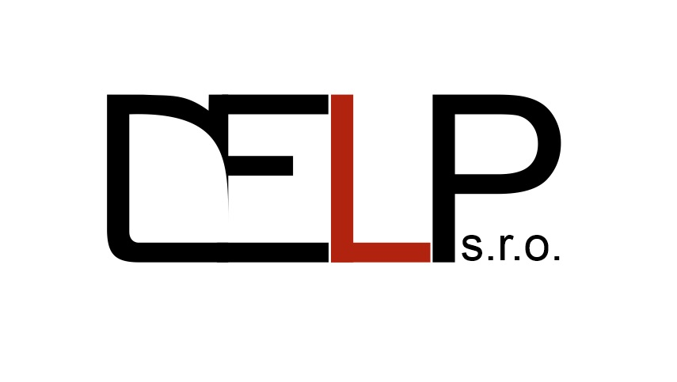

O nás
Spoločnosť DELP, s.r.o. pôsobí na slovenskom trhu od roku 2002. Ponúkame komplexné riešenie pre firmy, školy a organizácie, v oblasti kancelárskych potrieb, priemyselnej hygieny, tonerov a tlačiarenských potrieb a služieb aj vo výrobe reklamných predmetov. Záleží nám na tom, aby sme naplnili potreby každého zákazníka, a preto sa snažíme poskytovať širokú škálu služieb.
Vyber si povolanie, ktoré budeš milovať, a nebude dňa, kedy budeš musieť pracovať.
(Konfucius)
Čo robíme
Kontaktujte nás
Máte nejké otazky? Neváhajte nás kontaktovať Emailom alebo telefonicky a my vám odpovieme hneď ako to bude možné.
+421 918 654 216
delp@po.sk
Prevádzka
Kúpeľná 6663/6
080 01 Prešov
Slovenská republika
Konateľ
Ing. Michal Svocák
Tel.: +421 918 654 216
Email:delp@po.sk
Fakturačné údaje
DELP s.r.o.
Obrancov mieru 56/4683
080 01 Prešov
IČO: 36 483 192
DIČ: 2020015096
IČ DPH: SK2020015096